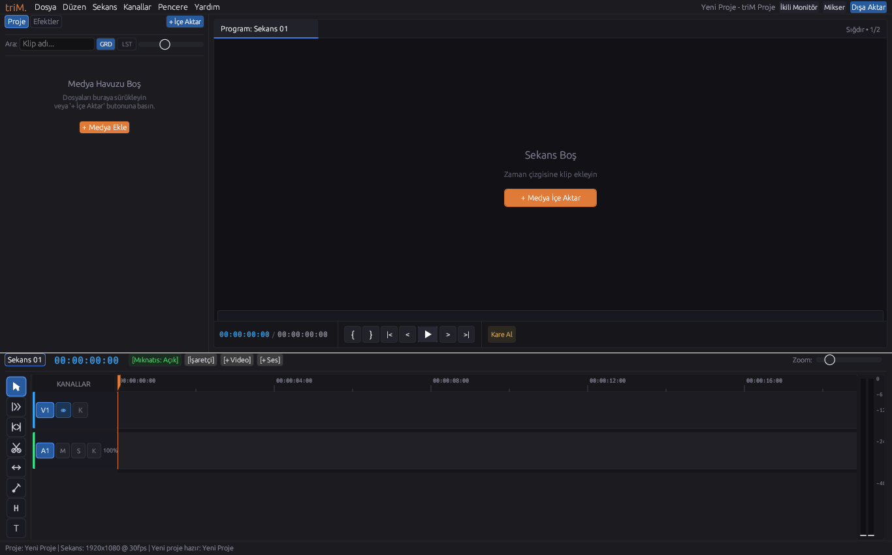
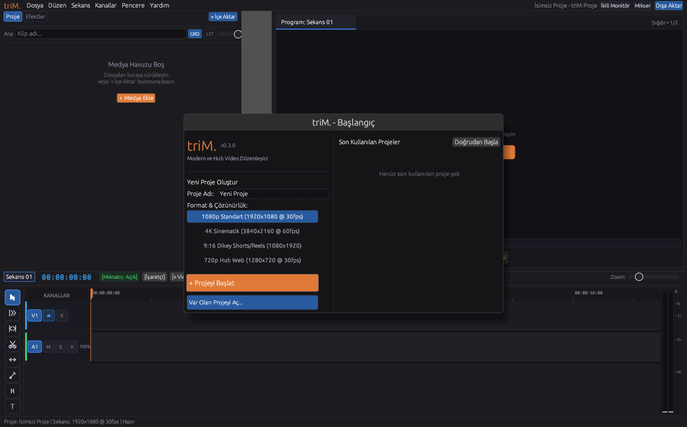

01 / TIMELINE
Kes. Taşı. Devam et.
Çok kanallı zaman çizgisi, manyetik hizalama, jilet kesimi ve ripple düzenleme. Fikrinin hızına yetişen bir kurgu alanı.
triM. Linux için geliştirilen açık kaynaklı, yerel bir video editörü. Görüntüyü, sesi ve ritmi aynı çizgide buluştur. Arada hiçbir fazlalık olmadan.


Kurgu masasında ihtiyacın olan şeyler. Birbirini tamamlayan, dikkat dağıtmayan araçlar.
Çok kanallı zaman çizgisi, manyetik hizalama, jilet kesimi ve ripple düzenleme. Fikrinin hızına yetişen bir kurgu alanı.
Çok kanallı stereo miksaj, seviye takibi, mute/solo ve videodan sesi ayırma.
Anahtar karelerle konum, ölçek, opaklık ve renk ayarlarına hayat ver.
FFmpeg tabanlı dışa aktarımla projenin son halini oluştur. 1080p, 4K, WebM ve daha fazlası.
Görsel şemalar temsili; yukarıdaki uygulama ekranları gerçektir.
NATIVE IS A CHOICE.
triM. bir web uygulamasının masaüstüne taşınmış hali değil. Linux için Rust ile yazılmış yerel bir editör. Medyan, proje dosyaların ve yaratıcı sürecin senin elinde.
Fareyi daha az kullan, ritmi daha az böl. triM.’de en sık kullanacağın birkaç kısayol.
Tüm kısayolları gör ↗triM. ücretsiz ve açık kaynaklı. Yayınlanan sürümü indir veya kaynak kodundan derle. Seçim senin.
GitHub sürümlerine gitLINUX · WAYLAND / X11 — RUST 2021
01 Gerekli paketleri yükle
sudo apt update
sudo apt install build-essential pkg-config libasound2-dev libx11-dev libgl1-mesa-dev ffmpeg02 Depoyu klonla ve derle
git clone https://github.com/MOzcelik14/triM.git
cd triM
cargo build --release
./target/release/trimRust / Cargo kurulu olmalıdır. Dağıtımınıza göre ek paketler gerekebilir.